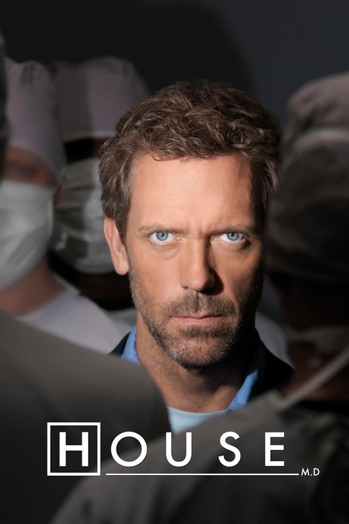

TV Show
House M.D.
One of the most sustained dramatizations of scientific reasoning ever produced for popular television — smarter than most people give it credit for.
The Show That Taught Us How to Think
Three wrong diagnoses. A whiteboard covered in ruled-out diseases. A patient getting worse. And a limping misanthrope at the front of the room, snapping at his team to think harder.
If you've watched House M.D., you can picture this scene without me describing it. The show ran for eight seasons and 177 episodes, and it returned to that same image hundreds of times — symptoms listed in dry-erase marker, a team arguing, House dismantling their hypotheses one by one until the right answer surfaced. Most people remember the show for Hugh Laurie's performance, or for the will-they-won't-they with Cuddy, or for the savage one-liners. Those are real. But after rewatching the series, I think we've been undervaluing what House M.D. actually was.
It was a show about epistemology. About how we know what we know. And in an era when confident nonsense travels faster than careful reasoning, it might be more relevant now than when it aired.
The Differential Is the Show
Most procedurals hide their reasoning. The detective stares meaningfully into the middle distance, then announces who did it. The lawyer has a flash of insight in the shower. House M.D. did the opposite. It made reasoning the spectacle.
The differential diagnosis — that ritual where the team throws out hypotheses while House cross-examines each one — is not a gimmick. It is a working dramatization of the scientific method. Observe symptoms. Generate hypotheses. Test them. Discard what's falsified. Revise. Repeat. The show stages this loop every single episode, and somehow it never stops being watchable, because the loop itself is dramatic. Being wrong, in House's world, is not failure. It's information. The first three diagnoses are supposed to be wrong. That's the entire point of the method.
This is why "It's not lupus" became a meme. The joke works because the show had trained its audience to expect the obvious answer to fail. Viewers internalized, episode by episode, that the first plausible explanation almost never survives contact with the evidence. If you watched all eight seasons, you have absorbed thousands of repetitions of generate, test, discard, revise. That is not nothing. That is a habit of mind.
"Everybody Lies" Is Not Misanthropy
The show's most famous line gets misread constantly. "Everybody lies" is not House being cynical about humanity. It's an epistemological position. House does not distrust people because he hates them — he distrusts self-reports because human testimony is unreliable evidence. Patients omit, misremember, rationalize, protect themselves, and protect each other. Symptoms get described in metaphors. Histories get sanitized. The body says one thing; the mouth says another.
House treats this as a data problem, not a moral one. He breaks into homes not because he enjoys it (well, partly) but because the home contains evidence the patient won't volunteer. The medication in the cabinet, the mold in the walls, the affair in the texts. To a scientist, the world is full of mute evidence that human language obscures. The show takes this seriously enough to build entire episodes around it.
This is also why House is so often right when his team is being humane and so often wrong when he is being humane. His epistemological discipline cuts through bedside reassurance and family loyalty and patient denial. It also cuts through the things that make him a person. The show knows this.
The Argument With Faith
House M.D. is not subtle about its position on magical thinking. The show stages the argument repeatedly and almost always lands on the same side. "House vs. God" (S2E19) gives us a teenage faith healer whose apparent miracles turn out to have a neurological explanation. "House vs. Faith" returns to the territory with a nun. Alternative medicine practitioners, homeopaths, and assorted mystics wander through the differential and get dismantled. House finds the material cause. He finds it almost every time.
You could read this as smug. I think it's something else. The show is making an argument: that the universe is causally closed, that symptoms have explanations, and that comfort is not a substitute for truth. When a patient asks why this is happening to them, House refuses to dress the answer in meaning. There is a tumor. There is a parasite. There is a genetic mutation. The universe is not punishing you. It is also not protecting you. It is just a system, and systems can be understood.
That is a real philosophical position, taken seriously, dramatized week after week. Television almost never does this.
The Show Argues With Itself
Here is what saves House M.D. from being a tract. It knows its own worldview is incomplete.
House is right about diseases and wrong about people. His rationalism cures bodies and wrecks marriages, friendships, and his own life. The show puts Wilson in his orbit specifically to make this point — Wilson treats cancer patients knowing many will die, and his job is partly to sit with them in that. House cannot do this. He retreats into puzzles because the puzzles have answers. People do not.
"One Day, One Room" (S3E12) is the show's best counter-argument against itself. House is forced into a long conversation with a rape survivor who does not want a diagnosis, does not want a treatment, does not want his rationalism. She wants a person to be present with her. House is terrible at it, and the episode does not let him off the hook. The differential cannot help here. There is no disease to cure. There is only another human being, and what she needs is not knowledge but company.
"Broken" (S6E1), the feature-length psychiatric hospital opener, takes this further. House becomes the patient. His self-model — I am the smartest person in the room, my reasoning is reliable, I do not need other people — gets tested and partially falsified. He learns, briefly, that some problems are not differential diagnoses. The show's most rationalist character has to confront the limits of rationalism applied to himself.
This tension — celebrating scientific reasoning as a method while showing that a life cannot be lived purely by it — is what elevates House M.D. above its peers. The show is not anti-science. It is anti-scientism, the belief that the methods of science are sufficient for everything that matters. House's tragedy is that he believes this and cannot stop believing it, even when it costs him everything.
Why It Matters Now
I am writing this in 2026, and the case for House M.D. as a culturally important show feels stronger to me than it did when it aired. We live inside an information environment that rewards confident wrong answers. Misinformation moves faster than correction. Plausible explanations crowd out true ones because they feel right. The patience required to say "I don't know yet, let's test it" is in shorter supply every year.
House M.D. dramatized that patience for eight seasons. It taught its audience, by sheer repetition, that the first answer is usually wrong, that being wrong is part of the process, that the world contains mute evidence the witnesses will not volunteer, and that comfort is not truth. This is not a small contribution to a culture. A whole generation of viewers spent years watching a show that modeled careful reasoning and skepticism toward easy explanations. Whether they noticed or not, something of that rubbed off.
Where the Show Falters
The later seasons — particularly seven and eight — drift away from the epistemological core and lean into soap opera. The Huddy relationship, once it lands, deflates the dynamic that powered the show. Plot mechanics replace character study. The differentials feel rote. By the final season, the show is going through motions it once invented.
The series finale itself is divisive, and I'll let you form your own view on it. What I will say is that it is at least thematically coherent — it returns to the question the show kept asking, about whether House can change, and it answers in a way that fits the character even if it disappoints some viewers.
The show is also imperfect on its own terms. It romanticizes House's misery. It gives him too many free passes for behavior that should have ended his career. It treats addiction with seriousness in some arcs and convenience in others. These are real problems. They do not undo the show; they texture it.
The Verdict
House M.D. is one of the most sustained dramatizations of scientific reasoning ever produced for popular television, wrapped in a Sherlock Holmes pastiche and carried by a once-in-a-generation lead performance. It is funnier than it has any right to be. It is also smarter than most people give it credit for, because its intelligence is hidden inside a procedural format that critics tend to dismiss.
If you watched it once for the cases and the snark, watch it again for the method. The whiteboard is the show. Everything else is decoration on a working model of how to think.